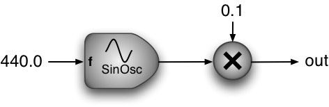

You need to implement the pure virtual function JuceIOHost::constructGraph() which returns a UGen graph. Most of the following examples/tutorials will use this method in order to focus on UGen++-specific issues.
00001 #ifndef _MAINCOMPONENT_H_ 00002 #define _MAINCOMPONENT_H_ 00003 00004 #include <juce/juce.h> 00005 #include "../../UGen/UGen.h" 00006 00007 class MainComponent : public Component, 00008 public JuceIOHost 00009 { 00010 private: 00011 00012 public: 00013 MainComponent () : JuceIOHost(0, 1) { } 00014 ~MainComponent () { } 00015 00016 UGen constructGraph(UGen const& input) 00017 { 00018 return SinOsc::AR(440, 0, 0.1); 00019 } 00020 }; 00021 00022 #endif //_MAINCOMPONENT_H_
This example also plays a single 440Hz sine wave at an ampltude of 0.1, exactly the same as Tutorial 01.01 .

Figure 01.02.01: A simple UGen graph
class MainComponent : public Component, public JuceIOHost {
The JuceIOHost handles the UGen++ configuration (e.g., input and output) described in the previous tutorial. The JuceIOHost can be configured for a particular number of inputs and outputs on construction:
MainComponent () : JuceIOHost(0, 1) { }
And the UGen graph is built by implementing the pure virtual function JuceIOHost::constructGraph() which is called when the JuceIOHost needs to to build the UGen graph to play. This is passed a UGen containing the inputs to the JuceIOHost, this should have a number channels equal to the first argument passed to the JuceIOHost constructor (0 in this case). The constructGraph() function must return the UGen graph to play. If the number channels returned is less than the number of output channels the JuceIOHost has (i.e., the second argument to the JuceIOHost constructor 1 in this case) the output will leave the additional channels empty. If the number of channels returned by the constructGraph() is greater than the number channels the JuceIOHost has, these will be processed but only the number of output channels specified will be sent to the host.
UGen constructGraph(UGen const& input) { return SinOsc::AR(440, 0, 0.1); } };
1.5.9